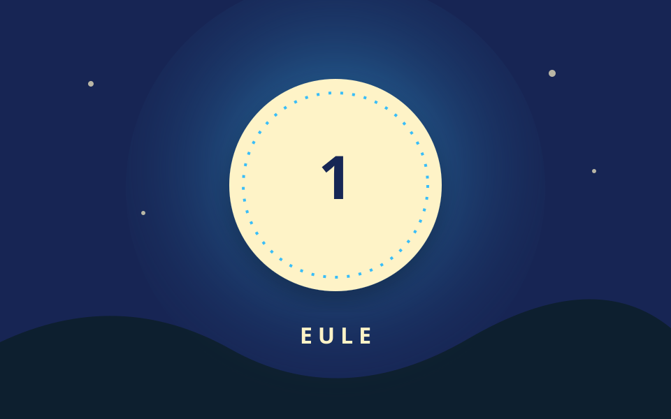

Station 1 von 5

Der schweigsame Wächter
Ich sehe die Nacht, doch die Sonne mich blendet. Ich rufe im Wald, wenn der Tag längst beendet.
Eure Aufgabe
Welches Tier bin ich? Zählt die Buchstaben seines Namens.
Tipp anzeigen
Gesucht ist ein Vogel mit großen Augen.